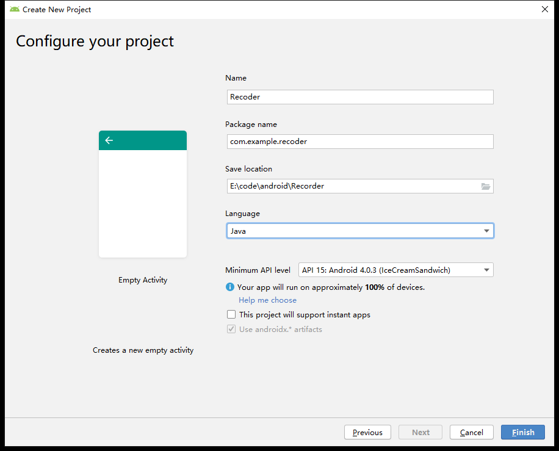
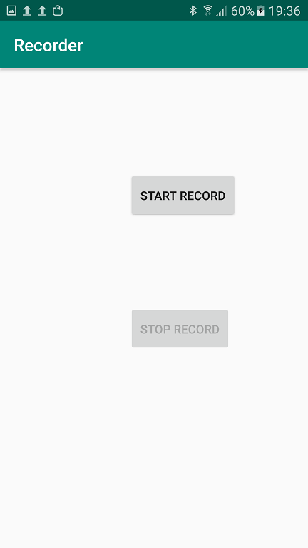

安卓开发基础¶
因为本文档涉及到很多需要实际操作的声音相关的实验，所以需要利用Android应用来帮助我们将录音和播放的功能实现到手机上。
Android studio 安装¶
首先是android开发环境 Android Studio的安装。请按照官网给出的教程进行安装。教程链接：https://developer.android.com/studio/install
声音的播放和接收应用的实现。¶
要开发一个新应用，首先需要打开android studio欢迎界面：

选择“Start a new Android Studio project”选项之后到达项目种类选择页面：

在这里，我们选择“Empty Activity”。 为你的项目设置名称、存储位置、开发语言等参数：

进入到开发界面：

接下来是应用的实现部分： 首先在文件“AndroidManifest.xml”中为录音应用申请录音和存储许可：
<uses-permission android:name="android.permission.RECORD_AUDIO"/>
<uses-permission android:name="android.permission.WRITE_EXTERNAL_STORAGE"/>
<uses-permission android:name="android.permission.READ_EXTERNAL_STORAGE"/>
private void GetPermission() {
/*在此处插入运行时权限获取的代码*/
if (ActivityCompat.checkSelfPermission(this, Manifest.permission.RECORD_AUDIO)!=
PackageManager.PERMISSION_GRANTED||
ActivityCompat.checkSelfPermission(this, Manifest.permission.WRITE_EXTERNAL_STORAGE)!=
PackageManager.PERMISSION_GRANTED||
ActivityCompat.checkSelfPermission(this, Manifest.permission.READ_EXTERNAL_STORAGE)!=
PackageManager.PERMISSION_GRANTED
)
{
ActivityCompat.requestPermissions(this,
new String[]{android.Manifest.permission.RECORD_AUDIO,
android.Manifest.permission.WRITE_EXTERNAL_STORAGE,
Manifest.permission.READ_EXTERNAL_STORAGE}, 0);
}
}

activity_main.xml文件中会出现两个按钮对应的代码：
<Button
android:id="@+id/start_record"
android:layout_width="wrap_content"
android:layout_height="wrap_content"
android:layout_marginStart="152dp"
android:layout_marginLeft="152dp"
android:layout_marginTop="124dp"
android:text="start record"
app:layout_constraintStart_toStartOf="parent"
app:layout_constraintTop_toTopOf="parent" />
<Button
android:id="@+id/stop_record"
android:layout_width="wrap_content"
android:layout_height="wrap_content"
android:layout_marginStart="152dp"
android:layout_marginLeft="152dp"
android:layout_marginTop="108dp"
android:text="stop record"
app:layout_constraintStart_toStartOf="parent"
app:layout_constraintTop_toBottomOf="@+id/start_record" />
Button StartRecord, StopRecord;
StartRecord = (Button)findViewById(R.id.start_record);
StopRecord = (Button)findViewById(R.id.stop_record);
//在录音键被按下之前，不允许按停止键
StopRecord.setEnabled(false);
//完成每个按钮的功能
StartRecord.setOnClickListener(new View.OnClickListener() {
@Override
public void onClick(View view) {
//恢复停止录音按钮，并禁用开始录音按钮
StopRecord.setEnabled(true);
StartRecord.setEnabled(false);
Thread thread = new Thread(new Runnable() {
@Override
public void run() {
//设置用于临时保存录音原始数据的文件的名字
String name = Environment.getExternalStorageDirectory().getAbsolutePath()+"/myrecorder/raw.wav";
//调用开始录音函数，并把原始数据保存在指定的文件中
StartRecord(name);
//获取此刻的时间
Date now = Calendar.getInstance().getTime();
//用此刻时间为最终的录音wav文件命名
String filepath =Environment.getExternalStorageDirectory().getAbsolutePath()+"/myrecorder/"+now.toString()+".wav";
//把录到的原始数据写入到wav文件中。
copyWaveFile(name, filepath);
}
});
//开启线程
thread.start();
}
});
StopRecord.setOnClickListener(new View.OnClickListener() {
@Override
public void onClick(View view) {
//停止录音
isRecording = false;
//恢复开始录音按钮，并禁用停止录音按钮
StopRecord.setEnabled(false);
StartRecord.setEnabled(true);
}
});
首先在MainActivity中设置用于控制录音继续和停止的全局变量，以及用于录音的参数
//48K采样率
int SamplingRate = 48000;
//格式：双声道
int channelConfiguration = AudioFormat.CHANNEL_IN_STEREO;
//16Bit
int audioEncoding = AudioFormat.ENCODING_PCM_16BIT;
//是否在录制
boolean isRecording = false;
//每次从audiorecord输入流中获取到的buffer的大小
int bufferSize = 0;
//开始录音
public void StartRecord(String name) {
//生成原始数据文件
file = new File(name);
//如果文件已经存在，就先删除再创建
if (file.exists())
file.delete();
try {
file.createNewFile();
} catch (IOException e) {
throw new IllegalStateException("未能创建" + file.toString());
}
try {
//文件输出流
OutputStream os = new FileOutputStream(file);
BufferedOutputStream bos = new BufferedOutputStream(os);
DataOutputStream dos = new DataOutputStream(bos);
//获取在当前采样和信道参数下，每次读取到的数据buffer的大小
bufferSize = AudioRecord.getMinBufferSize(SamplingRate, channelConfiguration, audioEncoding);
//建立audioRecord实例
AudioRecord audioRecord = new AudioRecord(MediaRecorder.AudioSource.MIC, SamplingRate, channelConfiguration, audioEncoding, bufferSize);
//设置用来承接从audiorecord实例中获取的原始数据的数组
byte[] buffer = new byte[bufferSize];
//启动audioRecord
audioRecord.startRecording();
//设置正在录音的参数isRecording为true
isRecording = true;
//只要isRecording为true就一直从audioRecord读出数据，并写入文件输出流。
//当停止按钮被按下，isRecording会变为false，循环停止
while (isRecording) {
int bufferReadResult = audioRecord.read(buffer, 0, bufferSize);
for (int i = 0; i < bufferReadResult; i++) {
dos.write(buffer[i]);
}
}
//停止audioRecord，关闭输出流
audioRecord.stop();
dos.close();
} catch (Throwable t) {
Log.e("MainActivity", "录音失败");
}
}
private void copyWaveFile(String inFileName, String outFileName)
{
FileInputStream in = null;
FileOutputStream out = null;
long totalAudioLen = 0;
//wav文件比原始数据文件多出了44个字节，除去表头和文件大小的8个字节剩余文件长度比原始数据多36个字节
long totalDataLen = totalAudioLen + 36;
long longSampleRate = SamplingRate;
int channels = 2;
//每分钟录到的数据的字节数
long byteRate = 16 * SamplingRate * channels / 8;
byte[] data = new byte[bufferSize];
try
{
in = new FileInputStream(inFileName);
out = new FileOutputStream(outFileName);
//获取真实的原始数据长度
totalAudioLen = in.getChannel().size();
totalDataLen = totalAudioLen + 36;
//为wav文件写文件头
WriteWaveFileHeader(out, totalAudioLen, totalDataLen, longSampleRate, channels, byteRate);
//把原始数据写入到wav文件中。
while(in.read(data) != -1)
{
out.write(data);
}
in.close();
out.close();
} catch (FileNotFoundException e)
{
// TODO Auto-generated catch block
e.printStackTrace();
} catch (IOException e)
{
// TODO Auto-generated catch block
e.printStackTrace();
}
}
private void WriteWaveFileHeader(FileOutputStream out, long totalAudioLen,
long totalDataLen, long longSampleRate, int channels, long byteRate)
throws IOException {
byte[] header = new byte[44];
header[0] = 'R'; // RIFF/WAVE header
header[1] = 'I';
header[2] = 'F';
header[3] = 'F';
header[4] = (byte) (totalDataLen & 0xff);
header[5] = (byte) ((totalDataLen >> 8) & 0xff);
header[6] = (byte) ((totalDataLen >> 16) & 0xff);
header[7] = (byte) ((totalDataLen >> 24) & 0xff);
header[8] = 'W';
header[9] = 'A';
header[10] = 'V';
header[11] = 'E';
header[12] = 'f'; // 'fmt ' chunk
header[13] = 'm';
header[14] = 't';
header[15] = ' ';
header[16] = 16;
header[17] = 0;
header[18] = 0;
header[19] = 0;
header[20] = 1; // WAV type format = 1
header[21] = 0;
header[22] = (byte) channels; //指示是单声道还是双声道
header[23] = 0;
header[24] = (byte) (longSampleRate & 0xff); //采样频率
header[25] = (byte) ((longSampleRate >> 8) & 0xff);
header[26] = (byte) ((longSampleRate >> 16) & 0xff);
header[27] = (byte) ((longSampleRate >> 24) & 0xff);
header[28] = (byte) (byteRate & 0xff); //每分钟录到的字节数
header[29] = (byte) ((byteRate >> 8) & 0xff);
header[30] = (byte) ((byteRate >> 16) & 0xff);
header[31] = (byte) ((byteRate >> 24) & 0xff);
header[32] = (byte) (2 * 16 / 8); // block align
header[33] = 0;
header[34] = 16; // bits per sample
header[35] = 0;
header[36] = 'd';
header[37] = 'a';
header[38] = 't';
header[39] = 'a';
header[40] = (byte) (totalAudioLen & 0xff); //真实数据的长度
header[41] = (byte) ((totalAudioLen >> 8) & 0xff);
header[42] = (byte) ((totalAudioLen >> 16) & 0xff);
header[43] = (byte) ((totalAudioLen >> 24) & 0xff);
//把header写入wav文件
out.write(header, 0, 44);
}

如果你不怕文件再根目录下堆积太多的话也可以直接把文件写在根目录下。 接下来我们进行真机运行，首先把android手机用数据线连接到电脑上，并允许调试。在android Studio点击运行按钮：

我们会在选择运行设备的界面看到这是一部三星手机：

点击“OK”，代码就会加载到手机上。由于我把权限请求放在了onCreate函数中，所以程序启动之后首先会进行权限请求：


当然，你也可以把权限请求放在具体使用到某项权限时进行请求。 在应用洁面上我们可以看到只有start record按钮可用：

点击start record,录音开始 stop record可用，start record不可用：
点击stop record之后文件夹中会出现两个文件，一个是原始数据文件，一个是带格式信息的wav文件：

到这里你已经成功的用自己实现的android应用录制到一个wav的声音文件了。下一个章节中，我们将探索如何用matlab读取并展示我们录到的声音。